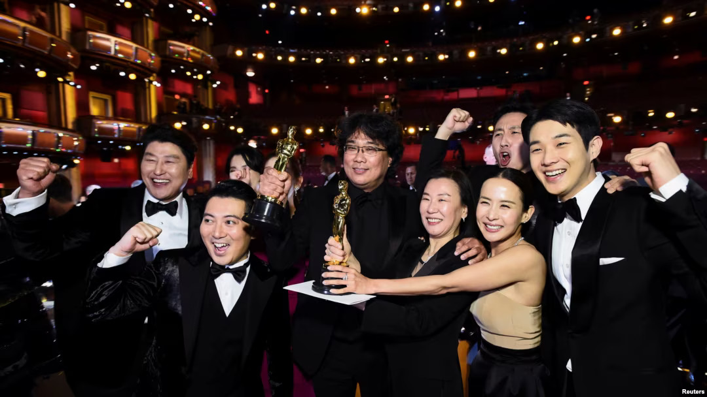
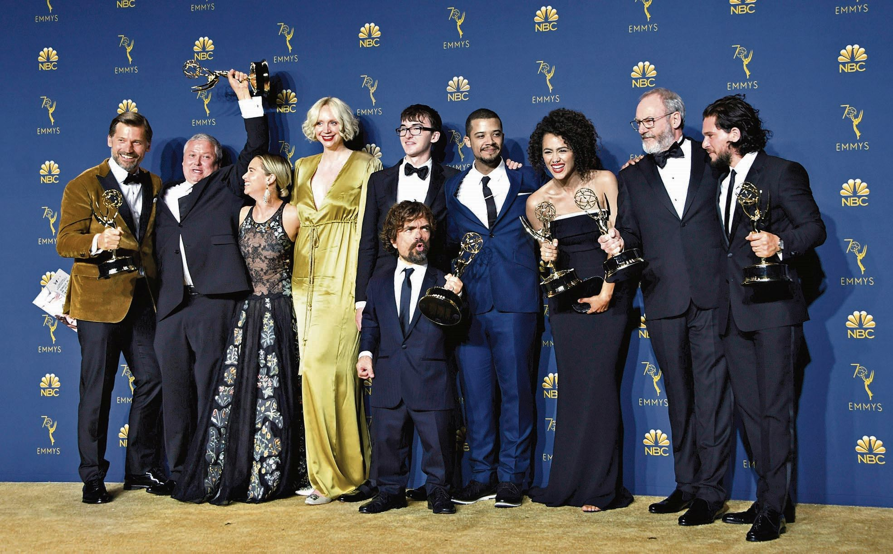

Oscars: Mejor Película - Parasite
Parásitos, la cinta dirigida por Bong Joon-ho, fue galardonada con el premio a mejor película en los Oscar 2020 por delante de 1917, Joker y otras 7 cintas.
‘Parásitos’ supuso toda una revolución en la ceremonia de los Oscars 2020, llevándose varios premios, entre ellos el del Oscar a la mejor película. La película, que ha encantó a los espectadores y a la crítica por su originalidad, triunfó en los galardones llevándose, además del citado premio, el éxito en otras categorías como mejor director, película internacional y guión original.
El film, dirigido por Bong Joon-ho, cuenta la historia de una familia de cuatro miembros que están sin trabajo y se infiltran como empleados domésticos en una casa de clase alta manteniendo la farsa hasta que explota. Los protagonistas por una u otra razón son parásitos, de ahí el título.
“A primera vista, ‘Parásitos’ podría leerse como una sátira social en la que una familia pobre se aprovecha de un clan adinerado, pero esa lectura es peligrosa. En realidad, los pobres de mi película son personas con talento y dignidad. Es la falta de empleo la que les empuja a aprovecharse de los ricos. Además, la familia burguesa también puede verse como un grupo de parásitos: son incapaces de realizar las tareas más elementales y requieren de sus sirvientes para hacer cualquier cosa”, confesaba el director en una de sus entrevistas.
Emmys: Mejor Serie - Game of Thrones
"Game of Thrones" se despidió a lo grande al ganar en 12 categorías de los premios Emmy, incluida la de mejor drama.
"Estos últimos 10 años han sido los mejores de nuestras vidas, para todos los que trabajaron con nosotros en esto, no puedo creer que terminamos, no puedo creer que lo que hicimos todos juntos se acabó. Nunca volveremos a ver algo así", dijo David Benioff, uno de los creadores de la ya legendaria serie junto a DB Weiss.
La fantasía épica y sanguinaria de HBO sobre familias nobles peleando por el Trono de Hierro se llevó también 10 premios en las categorías técnicas, entregadas el fin de semana pasado, y para Peter Dinklage como mejor actor de reparto por su papel del locuaz e inteligente Tyrion Lannister. "Me considero tan afortunado de integrar una comunidad que no es más que tolerancia y diversidad... porque en ningún otro lugar podría estar parado en un escenario como éste", dijo Dinklage.